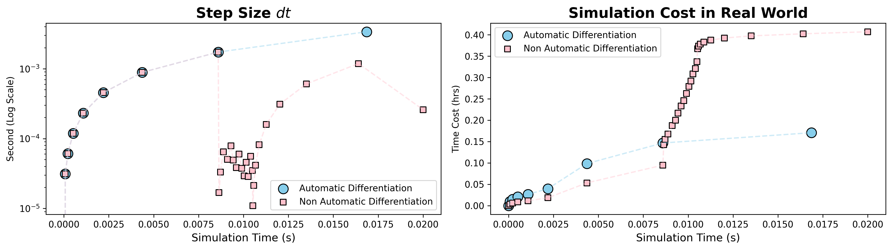
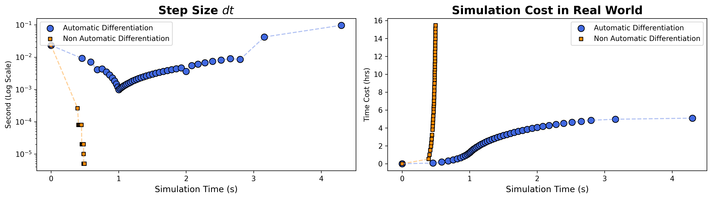

📘 Why We Need Automatic Differentiation?
🚀 A High-Efficiency Computational Graph-Based Approach
Automatic Differentiation (AD) is a computational technique that efficiently evaluates derivatives using a computational graph. Unlike symbolic or numerical differentiation, AD provides exact derivatives up to machine precision while remaining efficient. In the context of Finite Element Method (FEM), AD is especially beneficial for Jacobian matrix computation, which is essential for solving nonlinear systems.
In this benchmark, a simple shear test with an initial defect is used to illustrate the computational improvement of AD over traditional methods. A more complex scenario — 2D biaxial compression with 5 MPa confining pressure — is also included to demonstrate real-world performance.
🧪 Simple Shear Test on Square Domain with Initial Defect
Automatic Differentiation: Simulation is done in only few steps.

Non-Automatic Differentiation: Simulation is done in lots of steps.

Convergence Comparison

✅ Non-AD simulation typically requires a small time step, denoted as \(dt\) or \( \Delta t\), around \( \Delta t \approx 10^{-5} \), significantly increasing computation time.
✅ AD simulation is more stable and supports adaptive stepping with larger \( \Delta t \), reducing run time without losing accuracy.
✅ In the simple shear test, non-AD simulation took ~0.4 hours, nearly twice as long as the AD version.
🧪 Biaxial Compression Test (5 MPa Confining Pressure)
✅ In this complex benchmark with confining boundaries (See more on benchmark 2), AD significantly improves convergence.
✅ AD simulation completed a 5s simulation in ~5 hours. In contrast, the non-AD version was stuck at 0.5s after 16 hours and was eventually terminated.
